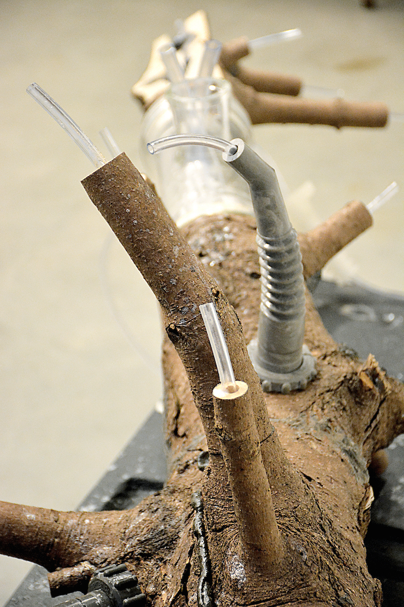

Pine tree, drainage pipe, found plastic, clear vinyl tubing,
scientific glass, sub-pump, painted steel, pine sawyer beetle, old
garden hose, brass and vinyl fittings, water, gelatin powder, maple
slab, 1.5 rpm electric motor and switches. Dimensions variable.
2021
In this installation fragments of a dissected tree are displayed with a fully functional circulatory system. This intervention of tubing and fittings follows the branching structure of the tree and added gasoline nozzle casts. A mixture of gelatin and water, housed in a found floating dock section, is pumped through the hybrid pine tree drain pipe.